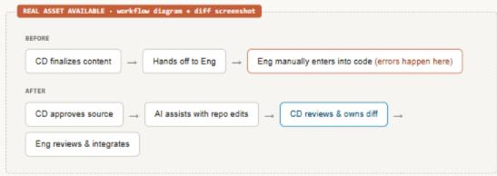
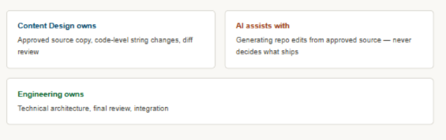
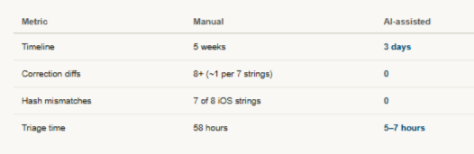

I optimize workflows
Redesigning how UX content moves into code
An AI-assisted production workflow — built as a Claude Code skill — that let Content Design author, validate, and implement UX string changes directly in code while Engineering retained technical review and integration ownership.
Featured artifact
The workflow, before and after

Impact snapshot
AI string authoring impact snapshot
My involvement
Creating the concept, workflow, skill, and pilot
Role
Concept creator, workflow designer, pilot lead, content-design implementer, internal skill author, and partner to Engineering.
Scope
UX string implementation from approved source copy through repository changes, validation, code review, and integration — piloted on two real Autofill experiments.
Contribution
Designed the workflow and ownership model, built and authored the skill itself, and ran a controlled, sourced comparison against the prior manual process.
The challenge
The handoff, not the people, was creating preventable implementation errors.
Content designers finalized approved language, then handed it to engineers to recreate manually inside the codebase. When a new group of engineers took over that handoff, errors increased dramatically: wrong text landed in code, descriptions were rewritten, and hashes broke.
It would have been easy to treat that as a training gap for those specific engineers. It was not. The handoff itself had no durable guardrails for anyone new to it, so the same errors would continue to recur.
The approach
I redesigned the ownership model, then built AI into the controlled parts of the process.
01
I recognized the pattern and proposed the fix.
Watching a new group of engineers struggle with the same handoff convinced me this was a structural gap in the process, not a skills gap in specific people. I proposed that Content Design handle string implementation directly in code, then brought the idea to Engineering for the technical expertise needed to make it robust.
02
I redesigned ownership around the work.
Engineering retained ownership of technical architecture, final review, and integration. Content Design’s ownership extended from approved source language into the corresponding code-level string changes. AI assisted with generating repository edits; it did not decide what to write or ship.

03
I built source-of-truth and review controls into the workflow.
The approved content remained the source of truth. I reviewed every generated diff and owned the submitted implementation before Engineering reviewed and integrated it.
Approved source→AI-assisted repo edits→Human diff inspection→Platform and locale validation→Engineering review
Quality checks moved earlier, so mismatches could be found before code landed rather than during downstream triage.
04
I proved the workflow with a real, sourced comparison.
I compared equal sets of 57 strings implemented through the manual and AI-assisted workflows, tracking timeline, correction diffs, hash mismatches, warnings, abandoned diffs, and my own triage time.

Impact
Implementation moved from five weeks to three days, with errors prevented before landing.
For equal sets of 57 strings, the manual workflow produced eight correction diffs, three abandoned diffs, more than 20 Phabricator warnings, and iOS hash mismatches in 88% of strings. The AI-assisted workflow produced none of those errors.
The workflow cut handoff-to-code-complete time from five weeks to three days and moved quality checks from post-land triage to pre-land review because the person responsible for the language could verify its implementation directly. It became a reusable team capability with documented guardrails and clear human and engineering accountability.
Reflection
The durable innovation was not the prompt. It was a better division of labor.
“AI output meets product reality when ownership, source-of-truth checks, and expert review are designed into the workflow.”